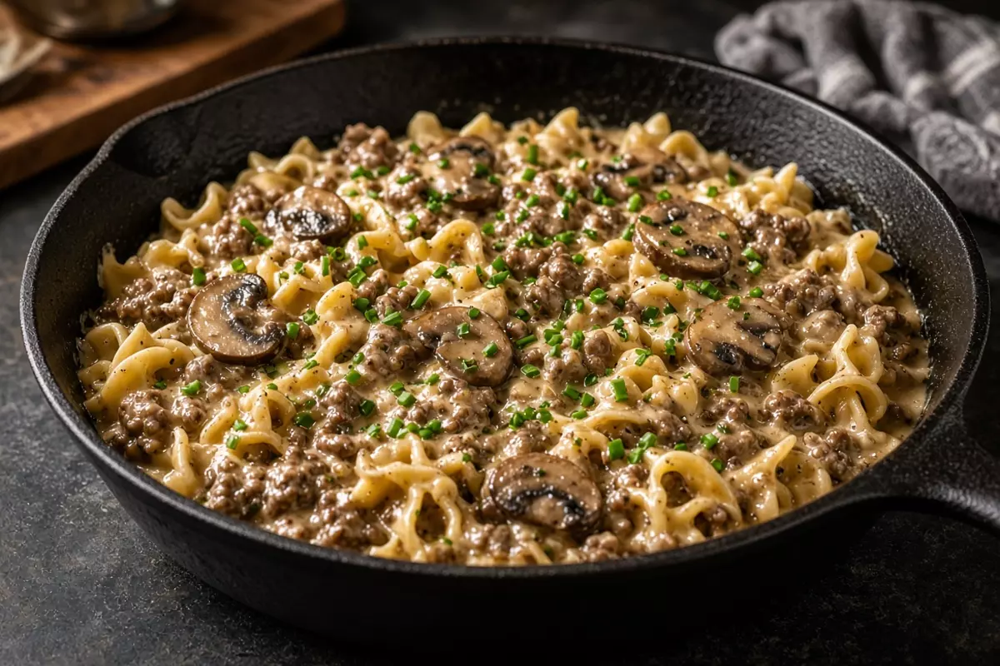

Skillet Beef Stroganoff
Ground beef, mushrooms, and onion in a sour cream pan sauce over egg noodles. One skillet and a pot, about 40 minutes.

4 servings
By
Yield: 4 servings
Prep:
Cook:
Total:
Ingredients
- 8 ounces egg noodles
- 1 teaspoon kosher salt, plus more for the pasta water
- 1 pound ground beef
- 1/2 teaspoon black pepper
- 1 tablespoon avocado oil
- 1 medium onion, sliced
- 8 ounces cremini mushrooms, sliced
- 2 cloves garlic, minced
- 1 tablespoon all-purpose flour
- 1 1/2 cups beef stock
- 1 tablespoon Worcestershire sauce
- 1 teaspoon Dijon mustard
- 3/4 cup sour cream
- 1 tablespoon unsalted butter
- 2 tablespoons chopped chives
Instructions
- Boil the noodles in salted water until just tender. Drain and toss with the butter.
- Heat a large skillet over medium-high heat. Brown the ground beef with 1 teaspoon salt and the pepper, breaking it up, about 6 minutes. Transfer to a plate. Leave the drippings.
- Add the oil if the pan is dry. Cook onion and mushrooms 5 to 6 minutes until browned. Stir in garlic for 30 seconds.
- Sprinkle in the flour and cook 1 minute. Pour in beef stock, Worcestershire, and Dijon. Scrape the pan and simmer 3 minutes until slightly thickened.
- Return the beef. Take the pan off the heat and stir in the sour cream. Fold in the noodles, top with chives, and serve.